Area Allievi
Benvenuti nella pagina allievi: qui potrete trovare tutti gli spartiti richiesti negli anni dai miei allievi e scaricarli gratuitamente.
L'archivio è in costante aggiornamento. Se non trovate uno spartito specifico che abbiamo studiato insieme, contattatemi e lo caricherò nell'archivio condiviso.
ACCEDI ALL'ARCHIVIO SPARTITI →